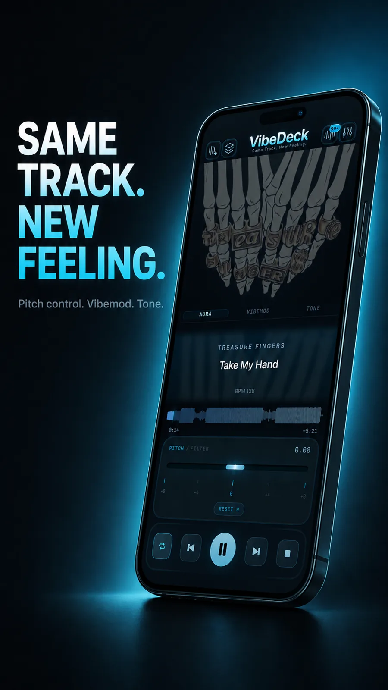

Pitch shifting
Real-time pitch control up to plus or minus 8 semitones, right on the main screen next to the LP/HP filter.
Pitch and tempo control, offline
VibeDeck Player is a music player with real-time pitch and tempo control. Shift pitch up to plus or minus 8 semitones, change tempo independently, and shape the sound with a filter, all offline on iPhone and Android.

Most music players treat a song as fixed: press play, accept the key and the speed. VibeDeck Player treats it as material. Singers move tracks into their range, guitarists match odd tunings, dancers slow a routine down to learn it, DJs sketch transitions. All on the device, with no internet and no account.
Real-time pitch control up to plus or minus 8 semitones, right on the main screen next to the LP/HP filter.
Slow down or speed up independently of pitch. Learn solos note by note, or push the energy up.
Waveform scrubbing, BPM readout, 3-band EQ with gain and a limiter. Practice and prep without decks.
Related: FLAC player for iPhone, offline music player for Android.
Up to plus or minus 8 semitones, in real time, without touching the file.
No. Tempo and pitch are fully independent: slow the song down, the key stays put.
Yes. All audio processing runs on the device, no internet or account needed.
Download VibeDeck Player
Pitch and tempo control for your own music files. iPhone and Android. No ads.